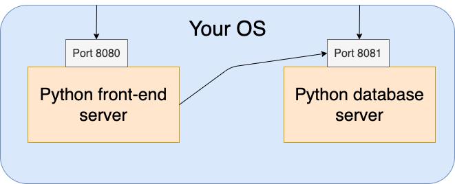
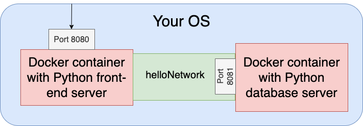

Key Word(s): Docker
 APCOMP 295 Advanced Practical Data Science
APCOMP 295 Advanced Practical Data Science
Demo 2 - Web DB servers¶
Harvard University
Fall 2020
Instructors: Pavlos Protopapas
We will build a simple Python web application that returns "Hello world" in a few different languages when you visit the web page.
Build a Python web application locally¶
Working off of your
lecture2/directory you build in the previous demo.Download the
hello_world_server.pyfile from the AC295 web page and place it in yourlecture2/directory.If you are running Python 3, then you should be able to run the web application using
python hello_world_server.pyin your terminal window.Visit http://localhost:8082/ in a web browser to make sure your application is up and running. You should get a web page that says
Could not connect to database.This is because our web server is trying to connect to a "database" to retrieve information about what should be displayed on the web page, but we have not started up our database server.Let's start up a database that our hello world server can connect to. This requires us to start up a second web server that will host our database. In this example, our database is really just a Python list.
- Please download the
hello_world_db.pyfile from the AC295 web page and place it in yourlecture2/directory. Take a look at the.pyfile to see that the database is just a Python list. - Open a second Terminal window and change directories into your
lecture2/directory and runpython hello_world_db.pyin your terminal window. - You should see a message beginning with "Created HTTP server to run our database...", which means you have successfully started a web server with a "database".
- Please download the
- Now, go back to http://localhost:8082/ in a web browser. You should see a web page that says "Hello world!" or its translation in Spanish, French, German, Mandarin, or Hindi. If you reload the page several times, you should see the translation changes.
- Although this is a simple example, you are running a fully functioning web application using two individual web servers on your computer!
Below is a schematic of the web application you have built. The servers are running on top of your OS, using your native Python. Because you are running the servers locally on your laptop, you are restricted to the localhost IP address to connect the two servers. As a result, a user can technically access your database directly by sending a request to http://localhost:8081, which is not what you want. 
Dockerize your Python web application¶
Going forward in this tutorial will require that you have Docker Desktop downloaded on your machine. If you were unable to download Docker Destop in the previous demo, please complete the rest of this exercise with a partner.
We will now put our "Hello world" python web application into 2 individual Docker containers.
- First, we must create a network on which our Docker containers can communicate with each other.
- Run
docker network create helloNetwork. - Run
docker network ls. You should seehelloNetworkin the list.
- Run
- Let's create a Docker container to run our database server now.
- Open a new Terminal window and change directories to the
lecture2/directory. - Please download the
Dockerfile_dbfile from the AC295 web page and place it in yourlecture2/directory. - Run
docker build -t ac295-lecture2:db -f Dockerfile_db .to build a Docker image for our database server.- If you look at the build log, you will see that this Docker image also installs
numpyjust for the container. This is useful in the situation that different parts of our application rely on different versions ofnumpyor some other package. This encapsulation and isolation actually allows for more efficient development of individual components of an application because the back-end of the components can be changed and upgraded independently as long as the communication lines (API calls between the components remain consistent.
- If you look at the build log, you will see that this Docker image also installs
- Run
docker image lsto see that we created a new Docker image with the tagdb. - Run
docker run --name db -d --network helloNetwork ac295-lecture2:dbin your terminal window.- The
--nameflag allows us to name the container. - The
-dflag tells Docker to run this container in the background. - The
--networkflag tells Docker which network we want the container to be connected to. Isolating containers to a specific network allows us to provide singular communication lines between different parts of an application and can prevent unwanted breaches. In this case, the container we just started is our database server and we do not want people on the outside to have access to it. Try going to http://localhost:8081/ to see if you can access the database server (hint: you should get a connection error).
- The
- Check that our container is connected to the
helloNetworkwe created by runningdocker network inspect helloNetwork. You should see a dictionary with your Docker container.
- Open a new Terminal window and change directories to the
- Let's create a Docker container for our front-end web server now.
- Please download the
Dockerfile_serverfile from the AC295 web page and place it in yourlecture2/directory. - Run
docker build -t ac295-lecture2:server -f Dockerfile_server . - Run
docker image lsto see that we created a new Docker image with the tagserver. - Run
docker run --name webServer -d -p 8082:8082 -e DB_URL=http://db:8081 --network helloNetwork ac295-lecture2:server.- The
-eflag allows us to specify an environment variable for our Docker container. In this case, we specify the URL through which our front-end server should communicate with our database server on the privatehelloNetworknetwork. If you look atDockerfile_serverfile, you will see that it defines theDB_URLand passes it to the Python call tohello_world_server.py. - By using the
-p 8082:8082flag, we expose port 8082 to the outside so our web page can be accessed.
- The
- Please download the
- If visit http://localhost:8082/, you will see that our "Hello world" application is working again. If you refresh the page a few times, you should see "Hello world!" in different languages.
Below is a schematic of your Dockerized web application. The two servers are running in individual Docker containers on top of your OS. Since we created a separate network for our containers to communicate on, you can no longer directly access your database by sending a request to http://localhost:8081. This is the type of encapsulation you would like for your database because it generally stores sensitive information. 
- Clean-up steps:
- Stop your containers with
docker stop $(docker container ls -q). This may take a few seconds. - Delete your containers with
docker rm $(docker ps -aq). Beware, this will stop all containers you have running on your computer, so if you have containers running for other classes, you will have to remove the containers using the container IDs. - Use
docker rmito delete your images, if you would like to.
- Stop your containers with